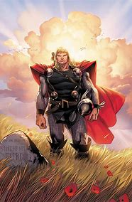
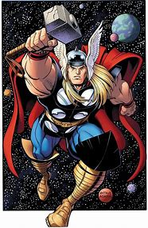
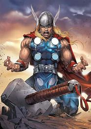

As the son of Odin (Anthony Hopkins), king of the Norse gods, Thor (Chris Hemsworth) will soon inherit the throne of Asgard from his aging father. However, on the day that he is to be crowned, Thor reacts with brutality when the gods' enemies, the Frost Giants, enter the palace in violation of their treaty. As punishment, Odin banishes Thor to Earth. While Loki (Tom Hiddleston), Thor's brother, plots mischief in Asgard, Thor, now stripped of his powers, faces his greatest threat.
As the son of Odin (Anthony Hopkins), king of the Norse gods, Thor (Chris Hemsworth) will soon inherit the throne of Asgard from his aging father. However, on the day that he is to be crowned, Thor reacts with brutality when the gods' enemies, the Frost Giants, enter the palace in violation of their treaty. As punishment, Odin banishes Thor to Earth. While Loki (Tom Hiddleston), Thor's brother, plots mischief in Asgard, Thor, now stripped of his powers, faces his greatest threat.
As the son of Odin (Anthony Hopkins), king of the Norse gods, Thor (Chris Hemsworth) will soon inherit the throne of Asgard from his aging father. However, on the day that he is to be crowned, Thor reacts with brutality when the gods' enemies, the Frost Giants, enter the palace in violation of their treaty. As punishment, Odin banishes Thor to Earth. While Loki (Tom Hiddleston), Thor's brother, plots mischief in Asgard, Thor,
